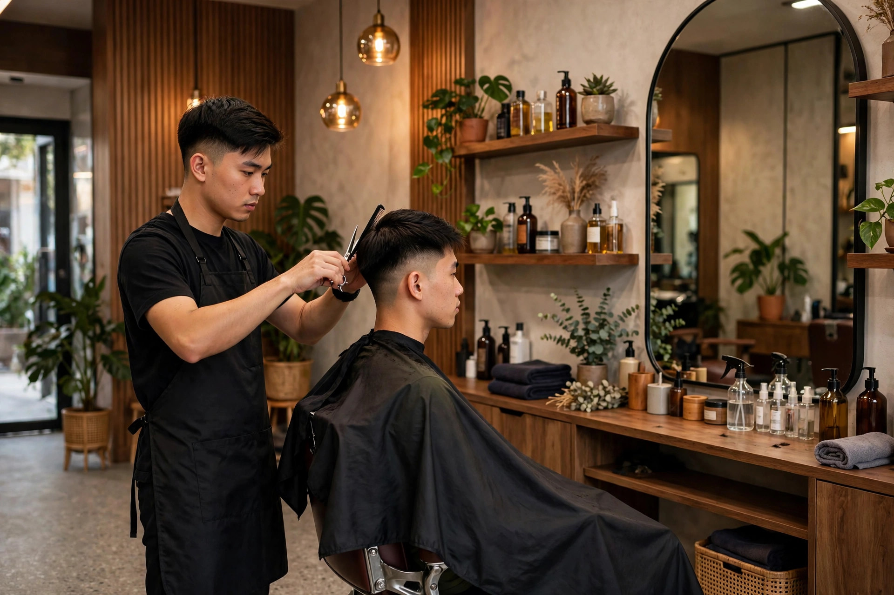

Website cho tiệm tóc, barber cần có gì: bảng giá rõ, đặt lịch online, khách quay lại trong một phút

Thợ barber đang cắt tóc cho khách trong tiệm — khoảnh khắc quen thuộc trong tiệm tóc, và là lý do website tiệm tóc phải cho khách tự xem bảng giá, tự chọn thợ và tự đặt lịch mà không cần chờ trả lời tin nhắn.
Chiều thứ bảy, tiệm tóc của bạn vừa vào giờ đông nhất: tông đơ chạy liên tục, ghế cắt kín chỗ, mà điện thoại ở quầy rung liên hồi. Tin nhắn Zalo dồn tới: "Anh ơi cắt undercut bao nhiêu tiền ạ, tối nay 7 giờ còn chỗ không ạ, em đặt lịch cho bạn trai lúc 6 giờ rưỡi được không ạ?" Bạn đang dở tay cắt fade cho khách ngồi ghế số 2, trả lời được một tin thì ba tin khác đã tới. Khách hỏi giá cắt thì bạn lật bảng giá, khách hỏi còn chỗ không thì bạn ngó lịch hẹn, khách hỏi thợ nào cắt đẹp thì bạn kể tên từng thợ — mỗi lịch hẹn là một cuộc trò chuyện dài, mà cuối cuộc trò chuyện đó, có khi khách đã sang tiệm khác đặt vì bên đó bấm vài lần là xong. Tiệm tóc của bạn không thiếu khách hỏi — chỉ thiếu một nơi để khách tự xem bảng giá, tự chọn thợ, tự đặt lịch mà không cần chờ bạn trả lời từng tin.
Chủ tiệm tóc và barber nào cũng quen cảnh này — không phải vì khách không thích tay nghề của bạn, mà vì khách cắt tóc quyết rất nhanh: đang cần một kiểu tóc mới cho buổi phỏng vấn sáng mai, đang rủ bạn đi cắt cùng tối nay, đang muốn đổi kiểu trước một dịp quan trọng. Ngay dưới đây, mình sẽ cùng bạn bóc tách vì sao tiệm đông khách hỏi vẫn mất lịch hẹn, những mục một website cho tiệm tóc và barber thực sự cần có, và cách bạn tự kiểm tra trước khi bỏ tiền làm web.
Vì sao tiệm tóc đông khách hỏi vẫn mất lịch hẹn: ba lỗi quen thuộc
Lỗi thứ nhất là bảng giá nằm trong ảnh chụp hoặc rải rác trong tin nhắn, khách không tra được giá theo dịch vụ và theo thợ. Một tiệm tóc có nhiều dịch vụ cùng lúc: cắt undercut, cắt fade, cắt layer, uốn, nhuộm, cạo mặt, gội đầu, combo cắt kèm gội — mỗi dịch vụ một giá riêng, giá lại khác nhau theo thợ chính hay thợ phụ, theo độ dài tóc với khách nữ. Khách nhắn hỏi "cắt undercut bao nhiêu ạ" thì bạn phải tra bảng giá rồi nhắn lại, khách hỏi thêm uốn tóc dài thì bạn tra tiếp một lượt nữa. Mỗi câu hỏi là một lần chờ, mà khách đang muốn đổi kiểu tóc thì chờ 10 phút đã sang tiệm khác đặt. Giá không hiện rõ ngay lúc khách cần thì khách sang tiệm có bảng giá ghi sẵn.
Lỗi thứ hai là đặt lịch hẹn qua tin nhắn dễ nhầm giờ, nhầm thợ và nhầm dịch vụ. Một lịch hẹn của tiệm bạn có nhiều chi tiết cùng lúc: thợ nào cắt, mấy giờ, cắt kiểu gì, uốn hay nhuộm, số điện thoại khách là số nào. Qua tin nhắn, các chi tiết này nằm rải rác trong cả chục tin nhắn qua lại, nhân viên đọc sót một dòng là xếp nhầm thợ, nhầm giờ, khách tới nơi phải ngồi chờ — mà khách hẹn 7 giờ tới nơi phải chờ tới 7 giờ rưỡi thì lần sau họ đặt tiệm khác. Chưa kể tin nhắn dồn vào giờ cao điểm: chiều tối thứ bảy, mấy khách cùng đặt lịch cho tối nay, bạn trả lời người này thì người kia đang chờ, tới lúc bạn nhắn lại "thợ A còn trống lúc 7 giờ ạ" thì khách đã chốt tiệm khác.
Lỗi thứ ba là khách không biết tiệm còn chỗ không, thợ mình thích còn trống giờ nào, kiểu tóc mình muốn tiệm có làm không nên cứ nhắn hỏi. Khách muốn cắt undercut thì cần biết thợ chuyên fade còn trống giờ nào, khách muốn uốn tóc dài thì cần biết tiệm có làm kiểu đó không và làm trong bao lâu, khách rủ bạn đi cắt cùng thì cần biết tối nay tiệm còn hai ghế trống cùng giờ không. Không có chỗ nào để khách tự xem, họ chỉ còn cách nhắn tin hỏi bạn — mà bạn đang dở tay cắt tóc thì không trả lời ngay được, khách chờ lâu lại tưởng tiệm không muốn nhận khách. Một tiệm nhỏ, mỗi tối vài chục tin nhắn hỏi "tối nay còn chỗ không", "thợ A còn trống giờ nào", "uốn tóc dài bao nhiêu tiền" thì cả buổi tối bạn chỉ ngồi trả lời tin nhắn, không còn thời gian cắt tóc.
7 mục một website tiệm tóc và barber thực sự cần có
Một website cho tiệm tóc và barber không cần nhiều trang, cũng không cần hiệu ứng cầu kỳ. Nó cần đúng những mục dưới đây — mỗi mục giải quyết một câu hỏi cụ thể mà khách luôn hỏi trước khi bấm đặt lịch.
1. Bảng giá rõ theo dịch vụ và theo thợ — khách tự tính được tiền trước khi đặt lịch
Khách vào web của tiệm bạn hiếm khi để "xem tóc chung chung" — họ vào vì một dịch vụ cụ thể: cắt undercut, cắt fade, uốn sóng, nhuộm, cạo mặt, gội đầu. Bảng giá phải xếp theo nhóm rõ ràng: cắt nam, cắt nữ, uốn, nhuộm, chăm sóc — mỗi dịch vụ ghi giá ngay dưới tên, giá theo thợ chính và thợ phụ ghi riêng, giá uốn và nhuộm ghi theo độ dài tóc ngắn, ngang vai, dài. Dịch vụ nào kèm gội đầu thì ghi rõ kèm gội, dịch vụ nào chưa kèm thì ghi rõ chưa kèm, để khách không bị bất ngờ lúc thanh toán. Giá hiện rõ ngay lúc khách cần thì khách tự tính được tiền trước khi đặt lịch, không cần nhắn hỏi "cắt undercut bao nhiêu ạ" rồi chờ bạn trả lời.
2. Đặt lịch online — chọn thợ, chọn giờ, chọn dịch vụ ngay lúc đặt
Khách đặt lịch cắt tóc hiếm khi gọi điện trước — họ nhắn tin hỏi "tối nay thợ A còn trống giờ nào ạ" rồi chờ bạn trả lời. Web phải cho họ chọn ngày, khung giờ 30 phút, thợ mình thích và dịch vụ ngay lúc đặt: cắt undercut với thợ A lúc 7 giờ tối nay, uốn tóc dài với thợ B sáng mai. Web báo thợ còn trống giờ nào, giờ nào đã kín, khách chọn giờ còn trống là xong. Tiệm nhìn vào lịch là biết ghế nào có khách lúc mấy giờ, ghế nào còn trống để nhận khách vãng lai. Khách đặt lịch trước thì tới nơi được cắt ngay, không phải ngồi chờ lúc tiệm đông — mà khách hẹn 7 giờ tới nơi phải chờ tới 7 giờ rưỡi thì lần sau họ đặt tiệm khác. Nhóm bạn đi cắt cùng thì đặt liền hai ghế cùng giờ, tới nơi cắt cùng lúc, xong cùng lúc.
3. Thư viện kiểu tóc thật — ảnh trước và sau, lọc theo khuôn mặt và độ dài tóc
Khách muốn đổi kiểu tóc thì cần nhìn thấy kiểu đó trên đầu người thật trước khi quyết định: undercut hợp khuôn mặt nào, fade giữ form được bao lâu, layer ngang vai hợp tóc dày hay tóc mỏng, uốn sóng làm trong bao lâu. Thư viện kiểu tóc phải là ảnh thật khách của tiệm bạn, chụp trước và sau khi cắt, có sự đồng ý của khách — mỗi kiểu ghi rõ hợp khuôn mặt nào, tóc dài bao nhiêu, thời gian làm bao lâu. Ảnh lấy trên mạng thì khách tới nơi cắt xong không giống ảnh, mà ảnh thật của tiệm thì khách nhìn là biết tay nghề của thợ mình sắp đặt. Khách xem ảnh là biết kiểu mình muốn tiệm có làm được không, không cần nhắn hỏi "tiệm có cắt được kiểu này không" rồi chờ bạn trả lời.
4. Giữ lịch bằng xác nhận nhanh — khách đặt xong nhận tin xác nhận, tiệm không lo khách quên
Khách đặt lịch xong mà không có xác nhận thì tới giờ hẹn hay quên, tiệm giữ ghế cho khách rồi khách không tới, ghế trống cả buổi. Web phải gửi xác nhận ngay sau khi khách đặt xong, qua Zalo hoặc tin nhắn, ghi rõ giờ hẹn, thợ, dịch vụ và giá khách đã chọn — nhắc lại trước giờ hẹn 1 tới 2 tiếng để khách nhớ. Khách bấm xác nhận là giữ ghế, khách muốn đổi giờ thì bấm đổi ngay trên web thay vì nhắn tin nhờ bạn sửa lịch. Tiệm không còn cảnh giữ ghế cho khách rồi khách không tới, mà khách cũng không còn cảnh tới nơi mới biết lịch hẹn của mình bị xếp nhầm giờ.
5. Đánh giá của khách đã cắt — ghi rõ kiểu tóc, thợ nào, giữ được bao lâu
Với tiệm tóc, đánh giá có giá trị nhất không phải là "cắt đẹp lắm ạ" mà là những dòng ghi rõ thông tin thật: khách cắt kiểu gì, undercut hay fade, thợ nào cắt, tóc giữ form được bao lâu, gội đầu xong form còn không, uốn sóng giữ nếp được mấy tuần. Mục này cần ghi rõ kiểu tóc đã cắt, thợ đã cắt và cảm nhận sau vài tuần — kèm được ảnh thật kiểu tóc khách đã cắt (với sự đồng ý của khách) thì tốt hơn nữa. Năm đến bảy đánh giá như vậy, đặt ngay dưới mục đặt lịch, có tác dụng hơn cả một trang giới thiệu dài: khách đang phân vân không biết thợ nào hợp với mình sẽ đối chiếu kiểu tóc của mình với kiểu trong đánh giá và tự tin bấm đặt, thay vì nhắn hỏi bạn rồi chờ trả lời.
6. Đặt lại trong một phút cho khách quen — bấm "cắt lại kiểu này", chỉ chọn lại giờ
Khách cũ từng cắt một kiểu quen thì lần sau chỉ cần bấm "cắt lại kiểu này": kiểu quen, thợ quen đã lưu sẵn, khách chỉ chọn lại ngày giờ, sửa số điện thoại nếu cần, rồi bấm đặt — xong trong một phút, không cần gọi điện, không cần mô tả lại kiểu tóc mình thích từ đầu. Mục này giữ khách quen hiệu quả nhất trong cả bảy mục: nam cắt tóc 3 tới 4 tuần một lần, khách quen quay lại đều đặn, mà mỗi lần quay lại họ đều thấy việc đặt lịch dễ hơn lần trước. Tiệm nào làm khách quen đặt lại dễ thì khách quen ở lại, không cần quảng cáo thêm.
7. Nút gọi — Zalo — bản đồ nổi một chạm, kèm giờ mở cửa và địa chỉ rõ ràng
Khách tìm tiệm bạn lần đầu thì cần biết tiệm ở đoạn nào, đi đường nào tới, mở cửa tới mấy giờ — web phải có cụm nút gọi, Zalo và bản đồ nổi một chạm để khách hỏi nhanh "tối nay thợ A còn trống giờ nào" và tìm đường tới tiệm trong cùng một lần chạm. Giờ mở cửa ghi rõ từng ngày, dịch vụ theo mùa ghi rõ còn làm tới khi nào, địa chỉ ghi rõ số nhà và đoạn đường để khách tìm được ngay. Mục này quan trọng nhất với khách mới: khách lạ tìm được tiệm, tới nơi có ghế ngồi, cắt đúng kiểu mình thích thì lần sau họ quay lại như khách quen.
👉 Xem thư viện mẫu web theo ngành nghề tại Web Khởi NguồnKhách đặt lịch cắt tóc trên điện thoại — chọn thợ, chọn giờ, chọn dịch vụ, xong trong một phút, không cần nhắn tin hỏi giá từng dịch vụ.
Khách nam cắt nhanh và khách nữ làm tóc dài dùng website theo hai cách hoàn toàn khác nhau
Khách nam cắt nhanh — cắt undercut, cắt fade, cạo mặt, 30 tới 45 phút là xong — vào web của bạn với mục đích rất cụ thể: xem tối nay thợ mình thích còn trống giờ nào, cắt undercut bao nhiêu tiền, tới nơi cắt ngay rồi đi. Với nhóm này, đặt lịch online, bảng giá rõ và nút gọi nhanh là quan trọng nhất; họ đặt xong rồi tắt đi, không ngồi xem lâu. Nhóm này cũng là nhóm quay lại đều đặn nhất — nam cắt tóc 3 tới 4 tuần một lần, đặt lại kiểu quen trong một phút thì lần nào họ cũng quay lại tiệm bạn.
Khách nữ làm tóc dài — uốn, nhuộm, phục hồi, 2 tới 3 tiếng một lần — lại vào web với tâm thế cần xem kỹ trước khi quyết định. Họ cần biết kiểu uốn mình thích hợp khuôn mặt nào, giá uốn và nhuộm theo độ dài tóc là bao nhiêu, làm trong bao lâu, thợ nào chuyên uốn và nhuộm. Với nhóm này, thư viện kiểu tóc, bảng giá theo độ dài tóc và mục tư vấn trước khi đặt là ba thứ quan trọng nhất; thiếu một trong ba, họ sẽ sang tiệm khác xem tiếp. Hiểu hai hành vi này, bạn sẽ biết vì sao website tiệm tóc và barber phải vừa có đủ đặt lịch online, bảng giá rõ và nút gọi nhanh cho khách nam cắt nhanh, vừa có thư viện kiểu tóc, bảng giá theo độ dài và tư vấn trước khi đặt cho khách nữ làm tóc dài — thiếu một phía là mất một nửa cơ hội.
Gói website trọn gói 586.000đ tại Web Khởi Nguồn gồm những gì cho tiệm tóc và barber?
Nghe giá 586.000đ, nhiều chủ tiệm nghi ngờ ngay: rẻ vậy thì web làm ra chắc chỉ để "cho có", được vài hôm lại lỗi. Nghi ngờ đó có cơ sở nếu giá rẻ đến từ việc cắt xén tính năng. Còn ở đây, giá thấp đến từ cách làm: tiệm nhỏ chỉ cần một website đúng nhu cầu, cấu trúc trang cho tiệm tóc và barber đã được đóng gói thành quy trình chuẩn, đội ngũ không phải ngồi lập trình lại từ con số không cho từng khách, nên chi phí dồn vào đúng phần nội dung và giao diện riêng của tiệm bạn. Bạn có thể xem chi tiết tại bảng giá và mục gói 586.000đ gồm những gì trên trang chủ.
Cụ thể với một tiệm tóc và barber, gói làm web 586.000đ (giá gốc 2.000.000đ) bàn giao gồm: website theo đúng ngành tóc, với trang giới thiệu tiệm, trang bảng giá theo dịch vụ và theo thợ, thư viện kiểu tóc, đặt lịch online, trang liên hệ; form đặt lịch và giỏ hàng để khách đặt xong trong vài lần chạm, nhận tin xác nhận giữ lịch ngay sau khi đặt; cụm nút gọi — Zalo — bản đồ nổi một chạm để khách hỏi nhanh "tối nay thợ A còn trống giờ nào" và tìm đường tới tiệm. Trọn gói đã gồm tên miền, hosting và SSL, web 1–5 trang theo yêu cầu, chuẩn mobile, hướng dẫn sử dụng chi tiết từ A-Z. Web dựng xong trong 1–3 ngày, bảo hành kỹ thuật trọn đời. Chính sách làm thử trước, hài lòng mới thanh toán, không cần đặt cọc — bạn xem trước bản dựng của chính tiệm mình rồi mới quyết định. Khi tiệm mở thêm chi nhánh hay cần bán hàng bài bản hơn, bạn có thể nâng cấp lên gói website cao cấp mà không phải làm lại từ đầu.
Cách tự kiểm tra một website tiệm tóc và barber trước khi quyết định làm
Dù bạn làm web ở đâu, hãy tự kiểm tra bằng trải nghiệm của chính khách hàng, với bốn bước đơn giản sau. Bước một: lấy điện thoại của bạn, bật 4G, đóng vai một khách cần đặt lịch cắt undercut tối nay lúc 7 giờ với thợ mình thích. Đếm số lần chạm từ lúc trang mở tới lúc bạn đặt xong lịch — nếu phải qua quá 4 đến 5 lần chạm, hoặc phải nhắn tin hỏi giá, hỏi thợ còn trống không thì mới đặt được, trang đó đang làm mất lịch hẹn mỗi ngày. Bước hai: thử xem bảng giá theo dịch vụ và theo thợ, xem giá uốn và nhuộm theo độ dài tóc có hiện rõ không; thử chọn một kiểu tóc trong thư viện, xem web có ghi hợp khuôn mặt nào và làm trong bao lâu không. Bước ba: thử đặt một lịch hẹn qua form, xem thông tin có tới tay bạn đầy đủ tên, số điện thoại, thợ, giờ, dịch vụ và giá khách đã chọn không; thử bấm đổi giờ, xem web có cho đổi ngay không. Bước bốn: bấm thử nút gọi và nút Zalo ngay trên trang, xem có ra đúng số của tiệm không; mở lại trang bằng 4G vào đúng giờ cao điểm tối, xem trang và ảnh kiểu tóc có hiện nhanh không — khách của bạn cũng đang mở trang trong đúng điều kiện như vậy, thường là lúc họ vừa tan ca và cần đặt một lịch cắt tối nay.
Quay lại cảnh chiều thứ bảy ở đầu bài: bạn không thể làm khách hết muốn đổi kiểu tóc ngay, nhưng bạn có thể khiến một người đang muốn cắt tóc tự xem được bảng giá theo thợ, chọn được thợ mình thích và đặt xong lịch trong một phút, không cần chờ ai trả lời tin nhắn. Bảng giá rõ ràng, ghế đặt trước có sẵn lúc khách tới, kiểu cắt đúng ý ngay lần đầu và thợ quen nhớ kiểu tóc của khách — lúc đó tin nhắn còn lại chỉ là "anh ơi tóc hôm nay đẹp lắm, tuần sau em lại ghé nhé", đúng kiểu tin nhắn mà chủ tiệm tóc và barber nào cũng muốn nhận. Nếu bạn đang cân nhắc làm website cho tiệm của mình, cứ xem trước các mẫu theo ngành nghề, đối chiếu với bảy mục trong bài này, rồi quyết định cũng chưa muộn.
Muốn tiệm của bạn có website như vậy?
Xem trước các mẫu demo theo ngành nghề, ưng mẫu nào làm mẫu đó — trọn gói 586.000đ, xem mẫu trước khi quyết định.